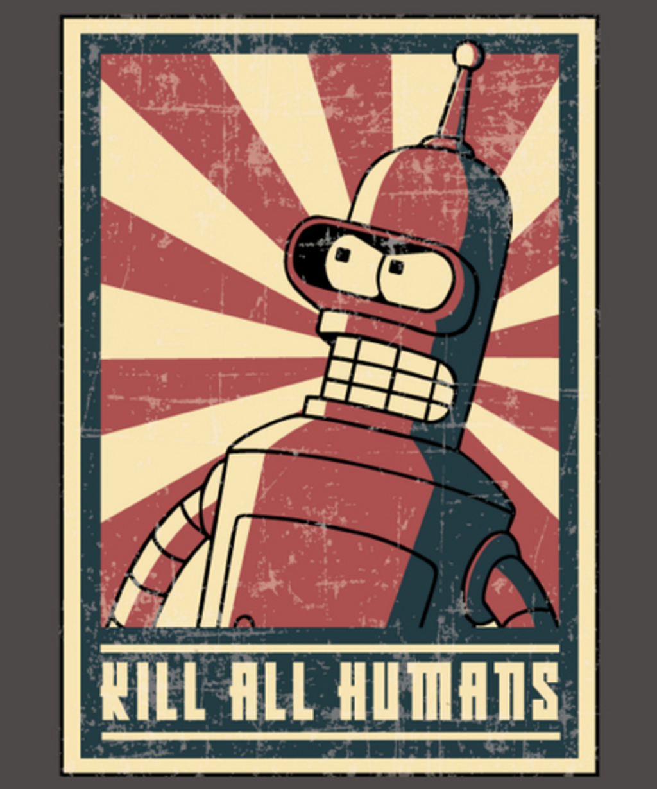

SkyNet is (almost) here. OpenAIs developer AI - Codex
What is it?
It is truly amazing and jawbreaking stuff!
OpenAI Codex is an AI system capable of transforming plain English text to real code in several languages (JavaScript, TypeScript, Python, Go, PHP, Perl, Ruby; but Python preferably).
It is powering GitHub Copilot - Visual Studio Code extension that serves the same purpose.
It is based on released in 2020 GPT-3 language model which generates very well written text in English based on few provided words. It writes so well it is difficult to recognize that it is not written by a human.
And there are some really creepy use cases - like a simulation of a dead person.
What can it do?
Say “Hello” with TKinter:
Create a Space Game:
Replace your Data Scientist:
Provide Jarvis-like interface:
Do your homework:
How to try it?
Hit the Join the Codex Waitlist button here.
Should I be afraid?
Ofcourse you should.

But, look at it from another angle - it can be your partner and your enchancement, and not a replacement.
GitHub nailed the name - Copilot. You and the AI both solve problems using own strengths and complementing each other.
In 1980s Steve Jobs said that computers are bicycles for our minds - and I believe that AIs will become new shiny Harleys for our minds.
We have some good examples of such relationships in sci-fi:
Jarvis and Iron Man
or Cortana and Master Chief